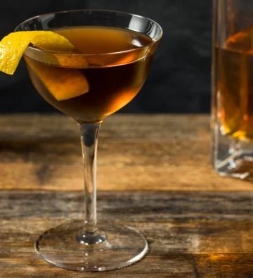

The first appearance of the Bobby Burns cocktail appeared in the 1900 edition of "Fancy Drinks" under the name "Baby Burns". In 1931, Albert Stevens Crockett included the drink in his "Old Wardorf Bar Days", but named it "Robert Burns" adding that "it may have been named after the celebrated Scotsman". There are many other tales about the origins of the drink with many different names. With so many drinks, the true origins of the Bobby Burns will remain uncertain, but the first known printed recipe appears in Craddocks 1930 "The Savoy Cocktail Book", an English book published during prohibition in the USA.
Pour all ingredients into a mixing glass with ice. Stir until the outside of glass feels cold. Strain cocktail into chosen glass.